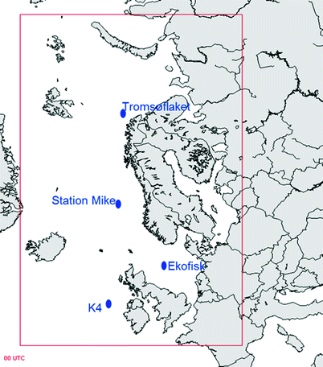
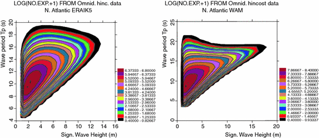

3.1 General
The oceanographic community has always been concerned with providing environmental models and data which approximate the physics of the ocean in the most accurate way. Industry, on the other hand, needs accurate data and models for design purposes. Although uncertainties of data and models were discussed before the 1980s, they were not systematically quantified. Further development of the reliability methods (Madsen et al. 1986) and their implementation by some parts of the industry in the 1980s has brought much focus onto the uncertainties associated with environmental description. The PROBabilistic Analysis program PROBAN® developed by Det Norske Veritas at the end of the 1980s, and continuously improved since then (DNV 2002), is still one of the leading software packages for reliability calculations and is used by academia as well as industry. Reliability methods allow quantification, in a probabilistic way, of the uncertainties in the different parameters that govern structural integrity.
3.2 Definition of Uncertainties
Bitner-Gregersen and Hagen (1990) suggested classification of uncertainties for environmental description. The proposed definitions were later generalised and in 1992 included in DNV Rules (DNV 1992).
Generally, uncertainty related to an environmental description may be divided into two groups: aleatory (natural variability) uncertainty and epistemic (knowledge) uncertainty. Aleatory uncertainty represents a natural randomness of a quantity, also known as intrinsic or inherent uncertainty, e.g. the variability in wave height over time. Aleatory uncertainty cannot be reduced or eliminated (see Skjong et al. 1995).
Epistemic (knowledge) uncertainty represents errors which can be reduced by collecting more information about a considered quantity and improving the methods of measuring it. In accordance with Bitner-Gregersen and Hagen (1990), this uncertainty may be classified into: data uncertainty, statistical uncertainty, model uncertainty and climatic uncertainty.
1.
Data uncertainty is due to imperfection of an instrument used to measure a quantity, and/or a model used for generating data. If a quantity considered is not obtained directly from the measurements but via some estimation process, e.g. significant wave height, then the measurement uncertainty must be combined with the estimation or model uncertainty by appropriate means.
2.
Statistical uncertainty, often referred to as estimation uncertainty is due to limited information such as a limited number of observations of a quantity (sampling variability) and is also due to the estimation technique applied for evaluation of the distribution parameters. The latter can be regarded as the model uncertainty.
3.
Model uncertainty is due to imperfections and idealisations made in physical process formulations as well as in choices of probability distribution types for representation of uncertainties.
4.
Climatic uncertainty addresses the representativeness of measured or simulated wave history for the (future) time period and area for which design conditions need to be provided. A data set has to be sufficiently long to eliminate climatic uncertainty, e.g. to avoid biasing towards years characterized by severe winds or by calm weather only.
To characterise the accuracy of a quantity, e.g. significant wave height SWH, it is necessary to distinguish systematic error (bias) and precision (random error) with reference to the true value τ, which usually is unknown.
Generally, environmental description will be affected by all types of epistemic uncertainties to varying degrees. Identification of uncertainties and their quantification represents important information for risk assessment in design and operation of marine structures. High uncertainty of environmental description may lead to over-design or under-design of marine structures, with significant economic/risk impact. Several authors have demonstrated in the past the importance of uncertainties for calculations of load and responses. Offshore industry had a leading role here. The shipping industry has tended to lag behind the offshore industry in these investigations. In the last decade also the shipping industry, as well as academia, has focused increasingly on studying sensitivity of ship load and responses to adopted uncertainties, see Bitner-Gregersen et al. (2002), Hørte et al. (2007), Bitner-Gregersen and Skjong (2008), Nielsen et al. (2009).
Enhancing safety at sea through specification of uncertainties related to environmental description is today one of the main concerns of the shipping industry in general and the Classification Societies in particular. The offshore industry is also much concerned with it.
Specification of uncertainties for environmental description is not an easy task because the true value τ is usually unknown and needs to be estimated based on available information. For the integrated wave parameters, for example, the values provided by wave rider buoys are commonly adopted as the true values. The situation is even more difficult for environmental models where experimental tests or the average values of recognized models are used as the reference values today. Further discussion on how to estimate the true value τ is still called for.
3.3 Uncertainties Related to Wave Climate Projections
Identification of uncertainties specified in Sect. 3.2 is of importance for design, particularly as no field observations will be available for validation of the projected future climate.
Specification of uncertainties is also of much concern to climate change researchers because they influence the climate model’s simulation of past, contemporary and future climate. Therefore much effort goes into reducing the uncertainties. The topic was discussed by the Workshop on Climate Change organized by the WMO and the OGP in Geneva in 27–29 May 2008.
Projections of wind and wave conditions for the twenty-first century will be subject to all four types of uncertainties described in the preceding chapter, particularly:
- Model uncertainty. There are at least a score of Global Circulation Models (GCM) in use around the world. They may give substantially different results, as described by Covey et al. (2003), who also state that the differences are less than what would have been anticipated from earlier studies. An updated intercomparison is due in 2013. The GCM models provide input to Regional Circulation Model (RCM) models. The degree to which GCM and RCM models have sufficient resolution and/or internal physics to realistically capture the meteorological forcing responsible for changes in met-ocean conditions is regionally dependent. For example current GCMs are unable to realistically represent tropical cyclones.
- Data uncertainty relates both to data used to describe present day wind and to wave data generated by wave models. The hindcasts include assimilated satellite data calibrated towards wave buoy data, and are often called “corrected hindcasts”. They will be affected by uncertainty of data used for calibration of satellite data as well as the assumptions on which the wave model is based on.
- Climate uncertainty, i.e. the forcing data used to drive the GCM. They vary with respect to assumed economic and societal global development and, therefore, future emission levels. They will also be affected by the projected time period.
The papers and studies referenced in Sect. 2.6 all indicate that a changing climate will have impact on extreme wave conditions in the world oceans but there are differences in the projections and even in-consistencies between the studies. This is not surprising given that the results were obtained using both different climate models and different climate forcing (emission scenarios).
As mentioned above in addition to the uncertainties introduced by choice of GCM climate model and climate forcing there are other factors related to regional modelling that will also add to the uncertainties when considering projections of future extreme wave conditions. Ocean wave heights are not directly available from global climate models and projections have to be made through some form of “downscaling” approaches of either statistical or dynamical character. The statistical approaches imply establishing statistical relations between output from the global climate models, e.g. gradients of sea level pressure (SLP) and observed or hindcast wave height parameters. Dynamical downscaling involves use of regional or local ocean wave models driven by the output from the global or regional climate models, e.g. surface wind speed and direction. Thus the choice of statistical vs. dynamical downscaling as well as the choice of statistical and dynamical wave models will introduce uncertainties in the projected future wave conditions.
Another factor that adds uncertainty is the way extremes are defined and estimated. With extremes we here understand the K-year return period value. Thus the choice of extreme value estimation may influence the results.
None of the reviewed papers have a systematic evaluation of the contribution of all the factors that influence the total uncertainty in projections of future wave conditions. Therefore it is difficult to quantitatively assess the relative contribution between more than two factors at a time.
3.3.1 Effect of Climate Model and Climate Forcing
Wang et al. (2004), Wang and Swail (2006a) as well as Caires et al. (2006) used one climate model (the Canadian CGCM2) for different emission scenarios. Wang and Swail (2006b), however, represented the average of three models for the emission scenarios A2 and B2. Their results confirm the qualitative picture and patterns of the other studies using only the CGCM2, but the magnitude of changes were generally smaller, indicating an influence of the choice of climate model on the end results. Indeed, Wang and Swail (2006b) found that the choice of climate model contributes most to wave projection uncertainty. This conclusion seems to be supported by Debernard and Røed (2008). Grabemann and Weisse (2008) also stated that there is a large uncertainty related to differences among climate models and found these to be larger than those related to differences among the climate forcing, or emission scenarios.
It is, however, important to note that the above studies mainly used the emission scenarios A2 and B2 (IS92a that was used in some cases is very similar to A2). These two scenarios do not represent the full variability of the IPCC scenarios and the results would probably have looked different if also the more extreme scenarios A1 and B1 were included (IPCC 2000). Both Debernard and Røed (2008) and Mori et al. (2010) used the A1B but combined with only one model, the BCCR model of the Bjerknes Center for Climate Research and the Japanese MRI-JMA, respectively. However A1B is an intermediate between A2 and B2 and closest to B2 and it is doubtful if this would shed more light on the contribution of different scenarios to the uncertainty.
It is difficult to quantify the uncertainties caused by different combinations of climate model and forcing scenario. Debernard and Røed (2008) combined the A2 and B2 scenarios with the Hadley Centre model HADAM3H, denoted as HADA2 and HADB2, and the Max Planck Institute model ECHAM4 with B2, denoted MPIB2, in addition to the combination of the BCCR model with the A1B scenario. Although they find some robust results, like the decrease in wave conditions southwest of Iceland and increase in the North and Norwegian Seas there are also indications that the uncertainties caused by different combinations may be of the same order as the projected change itself. Debernard and Røed (2008) showed quantile (qq) plots of scenario vs. control run and the relative increases of the ten largest sea states for four locations. E.g. for the K4 buoy location near Rockall west of Ireland, see map in Fig. 3.1, both the MPIB2 and HADB2 scenarios show changes in the three largest sea states of 7–8 % but with opposite signs (MPIB2 shows a decrease and HADB2 an increase). Different signs of the changes are also found at location M (Mike Station) in the Norwegian Sea and Tromsøflaket in the Barents Sea, although not as pronounced and consistent as for the K4 location. For Ekofisk in the North Sea the two scenarios agreed better.

Fig. 3.1
The Norwegian and North Sea with some of the locations referred to by Debernard and Røed (2008). Red rectangle is the domain of the hindcast model NORA10 by the Norwegian Meteorological Institute (met.no)
The results of Debernard and Røed (2008) are very similar to those of Grabemann and Weisse (2008), who considered the combinations of the Hadley Centre and Max Planck Institute climate models with the A2 and B2 forcing scenarios in the North Sea south of 57o 45’. Grabemann and Weisse (2008) found uncertainties in the 99th percentile significant wave height related to model choice to be up 0.7 m in the north, close to the coast of Norway. For differences between forcing scenarios the difference was up to 0.1 m northwest of Denmark. Both differences are of the same order as the projected changes.
3.3.2 Effect of Downscaling
Wang et al. (2010) compared dynamical and statistical downscaling methods for estimating seasonal statistics of SWH. The different downscaling approaches were valuated against the ERA40 wave data in terms of climatological characteristics and inter-annual variability. They considered only the North Atlantic.
Statistical downscaling methods for estimating SWH will generally establish statistical relationship between observed atmospheric predictors and observed SWH fields. Both seasonal mean SLP anomalies, P, and anomalies of seasonal mean squared SLP gradients, G, have been shown to be good predictors for predicting seasonal SWH statistics (Wang and Swail 2006a, b; Wang et al. 2004; Caires et al. 2006). The use of predictor anomalies, instead of predictor values, diminishes the effects of ‘model climate biases’, i.e. the systematic difference between the simulated and observed climate (long-term mean) fields. In order to make the statistical downscaling results more comparable with the wind-based dynamical ones Wang et al. (2010) also explored the potential of using surface wind speed dependent covariates as predictors for SWH by considering anomalies of seasonal mean squared surface wind speeds, W, as a predictor. Similar to G, this wind quantity represents surface wind energy. Use of W as predictors had not been explored before.
Wang et al. (2010) used the following global datasets of mean SLP, and of surface (10 m) wind:
CGCM2 was run three times with the IS92a forcing scenario, each run having different initial conditions and three datasets were stored: 1975–1994, 2040–2059 and 2080–2099. Only the first and third were used by Wang et al. (2010).
The ERA40 dataset for 1975–1994 was used as “observations” from which Wang et al. (2010) could estimate the bias of CGCM2 as well as obtaining standardized values of the predictors P (seasonal mean sea level pressure anomalies), G (anomalies of seasonal mean squared SLP gradients) and W (seasonal mean squared surface wind speed). The predictors were standardized using observed mean and standard deviations for the period 1975–1994.
Using 12-hourly values of the predictors and the predicted SWH, they found that it is sufficient to use W as predictor. In addition to the 12-hourly values for predictors they also used seasonal data. Thus there were four combinations—12-hourly and seasonal data each with non-standardized and standardized predictors. The standardized estimates were judged to be best and thus preferred.
For dynamical downscaling Wang et al. (2010) obtained global 6-hourly instantaneous wave heights by running the ODGP-2G wave model (Cox and Swail 2001) forced by the global 6 - or 12-hourly surface wind fields from the aforementioned CGCM2 ensemble of three runs. In addition the model was also run using winds that were adjusted for model wind climate biases. Inter-comparison of runs with and without adjusted wind climate estimates suggests that the former estimates are better than the latter because the latter suffers from the effects of model wind climate biases.
For the statistical downscaling Wang et al. (2010) concentrated on projections of changes in mean and 20-year return period values between 1975–1994 and 2080–2099 using both standardized 12-hourly and standardized seasonal data with seasonal mean squared surface wind speed, W, as predictor. For the dynamical downscaling they consider the same periods with adjusted wind climate.
The broad picture is that the dynamical and both statistical projections show similar patterns of projected changes in both seasonal means and extremes, in winter (January, February and March) as well as in fall (October, November and December). In winter, this pattern is characterized by increases in the eastern and western subtropical North Atlantic and decreases almost everywhere else. In the fall, it is characterized by increases west of British Isles and eastern subtropical North Atlantic, with decreases in the other areas.
On a smaller scale, there are some differences among the three sets of projections. The dynamical downscaled projections with adjusted wind climate show generally more extensive areas of large decreases than either of the statistical projections, especially for seasonal mean SWH. For a small region off Labrador in winter, the same dynamically downscaled projections show large increases, but the standardized statistically downscaled projections based on seasonal data sets show small decreases, in both seasonal means and extremes of SWH. Projections based on 12-hourly data sets show increases in seasonal extremes with small decreases in seasonal means.
In autumn, the mid latitude area of increase is located more eastward in the adjusted dynamical projections than in either of the statistical projections.
In some areas the difference between the different downscaling approaches for projected changes in the 20-year return period SWH from 1975–1994 to 2080–2099 are of the same order as the projected change itself. The projected changes found by Wang et al. (2010) appear to be 0.5–1.0 m of either sign.
To further illustrate the effect of dynamical downscaling we have used wave data from the ERA-Interim reanalysis (Dee et al. 2011) and the NORA10 hindcast data of the Norwegian Meteorological Institute (Reistad et al. 2011). The horizontal resolution of the wave data of ERA-Interim is 110 km, whereas it is 10 km in NORA10. Scatter diagrams of significant wave height and spectral wave period have been established and fitted by a joint model, with a 3-parameter Weibull distribution for the SWH and a conditional lognormal distribution for the spectral wave period, Tp, see Bitner-Gregersen (1988), Sect. 6.4. and Eqs. (9–12). The fitted distributions are shown in Fig. 3.2.

Fig. 3.2
Fitted joint probability densities of SWH and spectral wave period to ERA-Interim a and NORA10 data b
The differences between two data sets are obvious and significant. The fitted probability densities differ not only in shape but also in extremes. The higher resolution NORA10 reveal more details and also higher waves. In fact, the difference in the 100-year significant wave height from the two models is 3–4 m.
3.3.3 Effect of Extreme Value Model
For design of ships, and marine structures in general, the extreme values of wind and wave parameters need to be estimated. Today, time-independent statistics are used in design. For climate change projections the non-stationary character of the climate, in terms of both climate change trends and natural variability cycles, needs to be taken into account.
Some attempt has been made to model non-stationary character of wind and wave climate. Caires et al. (2006) used the non-homogeneous Poisson process (NPP) to model extreme values of the 40-year long ECMWF Re-Analysis (ERA-40) data set for significant wave height. The model parameters were expressed as functions of the seasonal mean sea pressure anomaly and seasonal squared sea pressure gradients index. Using three scenarios, projections of the parameters of the non-homogeneous Poisson process were made; trends to these projections were determined and return-value estimates of the significant wave height up to the end of the twenty-first century were calculated. Estimates of the uncertainty resulting from the choice of non-stationary model for extremes were obtained by comparing estimates associated with the NPP estimates and the homologous estimates using a non-stationary generalized extreme value (NS-GEV) model. Caires et al. (2006) found that the results from the two statistical models are compatible by predicting the same type of trends and that estimates at a fixed time point have intersecting 95 % confidence intervals. They also found that the width of the confidence intervals can be quite large and larger than the projected changes, especially in the case of NS-GEV. The effects of choice of non-stationary model for extremes is largest where the confidence intervals are large.
Alternatively to climate models the Bayesian hierarchical models in space and time provide very valuable contribution to predictions of future met-ocean climate. As demonstrated for SWH by Vanem et al. (2011) the Bayesian models allow predicting climate changes in met-ocean conditions based on historical data and forcing scenarios, thus avoiding running climate models. Vanem and Bitner-Gregersen (2012) have applied successfully the Bayesian hierarchical model of Vanem et al. (2011) to monthly maxima at one location in the North Atlantic and predicted increase of extreme SWH. The model has been recently extended to account for different forcing scenarios, Vanem (2012). The obtained increase in the SWH monthly maxima is consistent with the results obtained by use of GCM and downscaling techniques.
References
Bitner-Gregersen EM (1988) Joint environmental model. Annex A, Det norske veritas report no. 87–31, Høvik: Madsen HO, Rooney P, Bitner-Gregersen E Probabilistic calculation of design criteria for ultimate tether capacity of snorre TLP
Bitner-Gregersen EM, Hagen O (1990) Uncertainties of data for the offshore environment. J Struct Saf 7:11–34
Bitner-Gregersen EM, Hovem L, Skjong R (2002) Implicit reliability of ship structures. Proceedings OMAE2002, Oslo, 23–28 June 2002
Bitner-Gregersen EM, Skjong R (2008) Concept for a risk based navigation decision assistant. Marine Struct 22(2009):275–286
Caires S, Swail VR, Wang XL (2006) Projection and analysis of extreme wave climate. J Climate 19:5581–5605
Covey C, AchutaRao KM, Cubasch U, Jones P, Lambert SJ, Mann ME, Phillips TJ, Taylor KE (2003) An Overview of Results from the Coupled Model Intercomparison Project (CMIP). Global Planet Change 37:103–133CrossRef
Cox AT, Swail VR (2001) A global wave hindcast over the period 1958–1997: validation and climate assessment. J Geophys Res 106(C2):2313–2329
Debernard JB, Røed LP (2008) Future wind, wave and storm surge climate in the northern seas: a Revisit. Tellus 60A:427–438
Dee DP, Uppala SM, Simmons AJ, Berrisford P, Poli P, Kobayashi S, Andrae U, Balmaseda MA, Balsamo G, Bauer P, Bechtold P, Beljaars AC M, van de Berg L, Bidlot J, Bormann N, Delsol C, Dragani R, Fuentes M, Geer AJ, Haimberger L, Healy SB, Hersbach H, H′olm EV, Isaksen L, Kållberg P, Köhler M, Matricardi M, McNally AP, Monge-Sanz BM, Morcrette J-J, Park B-K, Peubey C, de Rosnay P, Tavolato C, Th′epaut J-N, Vitart F (2011) The ERA-interim reanalysis: configuration and performance of the data assimilation system. Q J R Meteorol Soc 137:553–597
DNV (1992). Classification note 30.6: Structural reliability analysis of marine structures. July 1992
DNV (2002). PROBAN theory, general purpose probabilistic analysis program, the author L. Tvedt, Version 4.4, Høvik, Norway
Flato GM, Boer GJ (2001) Warming asymmetry in climate change simulations. Geophys Res Lett 28(1):195. doi:10.1029/2000GL012121
CrossRef
Grabemann I, Weisse R (2008) Climate change impact on extreme wave conditions in the North Sea: an ensemble study. Ocean Dyn 58:199–212CrossRef
Hørte T, Skjong R, Friis-Hansen P, Teixeira AP, Viejo de Francisco F (2007) Probabilistic methods applied to structural design and rule development. Proceedings of the RINA conference development of classification & international regulations, Jan 2007, London, pp 24–25
Madsen HO, Krenk S, Lind NC (1986) Methods of structural safety. Prentice-Hall, Enlewood Cliffs 07632
Mori N, Yasuda T, Mase H, Tom T, Oku Y (2010) Projection of extreme wave climate change under global warming. Hydrol Res Lett 4:15–19CrossRef
Nielsen UD, Friis-Hansen P, Jensen JJ (2009) A step towards risk-based decision support for ships-evaluation of limit states using parallel system analysis. Marine struct 22:660–669
Reistad M, Breivik O, Haakenstad H, Aarnes OJ, Furevik BR (2011) A high-resolution hindcast of wind and waves for the North Sea, the Norwegian Sea and the Barents Sea. J Geophys Res Oceans 116. doi:10.1029/2010JC006402. C05019
Skjong R, Bitner-Gregersen EM, Cramer E, Croker A, Hagen Ø, Korneliussen G, Lacasse S, Lotsberg I, Nadim F, Ronold KO (1995). Guidelines for offshore structural reliability analysis—General. DNV report no 95–2018
Vanem E, Huseby AB, Natvig B (2011) A Bayesian hierarchical spatio-temporal model for significant wave height in the North Atlantic. Stochastic environmental research and risk assessment, 29 Sept 2011, pp 1–24. doi:10.1007/s00477-011-0522-4
Vanem E, Bitner-Gregersen EM (2012) Stochastic modelling of long-term trends in the wave climate and its potential impact on ship structural loads. Appl Ocean Res 37(2012):235–248CrossRef
Vanem E (2012). A stochastic model for long-term trends in significant wave height with a CO2 regression component. Proceedings of OMAE 2012 confernece, 1–6 July 2012, Rio de Janeiro, Brazil
Wang XL, Swail VR (2006a) Historical and possible future changes of wave heights in Northern Hemisphere Ocean. In: Perrie W (ed.) Atmosphere-Ocean interactions, vol 2. Wessex Institute of Technology Press, Southampton, p 240
Wang XL, Swail VR (2006b) Climate change signal and uncertainty in projections of Ocean wave heights. Clim Dyn 26:109–126. doi:10.1007/s00382-005-0080-x
CrossRef
Wang XL, Zwiers FW, Swail VR (2004) North Atlantic Ocean wave climate change scenarios for the twenty-first century. J Clim 17:2368–2383CrossRef
Wang XL, Swail VR, Cox A (2010) Dynamical versus statistical downscaling methods for Ocean wave heights. Int J Climatol 30(3):317–332
Uppala SM et al (2005) The ERA-40 re-analysis. Quart J Royal Meteorol Soc 131:2961–3012
IPCC (Intergovernmental Panel on Climate Change) (2000) Special report on emission scenarios. (Nakicenovic N, Nebojsa Nakicenovic, Alcamo J, Davis G, de Vries B, Fenhann J, Gaffin S, Gregory K, Griibler A, Jung TY, Kram T, La Rovere EL, Michaelis L, Mori S, Morita T, Pepper W, Pitcher H, Price L, Riahi K, Roehrl A, Rogner HH, Sankovski A, Schlesinger M, Shukla P, Smith S, Swart R, van Rooijen S, Victor N, DadiZ). Cambridge University Press, Cambridge, United Kingdom and New York